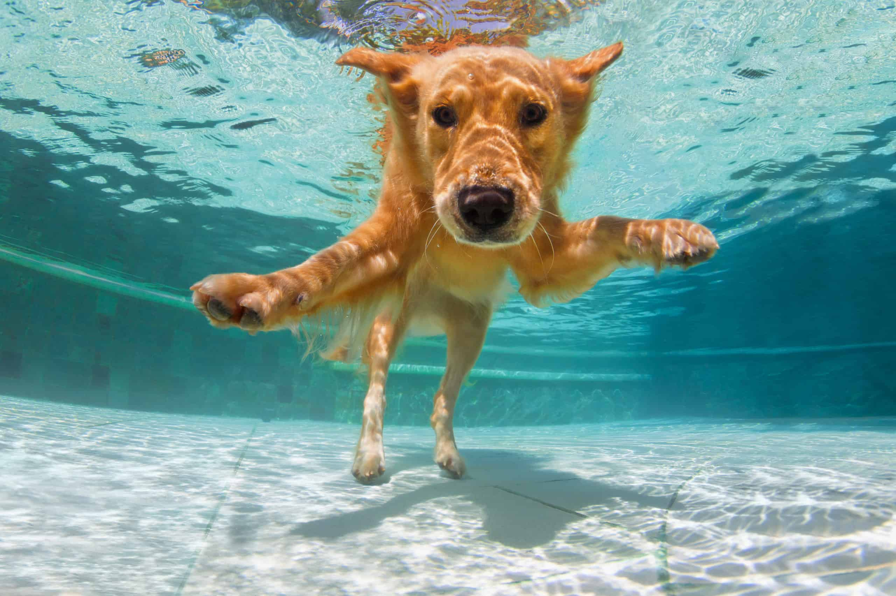

Bacon is 9 years old (56 years young!) and is a Labradoodle. He loves to eat anything that falls on the floor and enjoys playing with squeaky toys. His favorite travel destination is Venice Beach, CA.
Meet Our Furry Pals
Here are some of our favorite furry pals!
Say Hi to Bacon


-
-
Bacon prefers to spend his days lounging among the three different beds/couches that his family has gifted him. He enjoys a walk or two around the neighborhood. On a good day he will meet a friend or two on his walk.
-
At night just as the rest of the family is ready to relax, Bacon suddenly wants to release all of his energy. He will place his toys on a mini couch and frantically drag the couch around, giving his toys "a ride." He likes anyone who gives belly rubs. He will beat you in a game of tug-of-war. He will sneak onto the couch no matter how many times you say no.
Say Hi to Daisy



-
Daisy is a 1 years old (parenting a teenager is hard!) golden retriever that identifies as a poodle. Her favorite food is The farmers dog (health is the newest trend). She looks playing in the mirror and traveling to the doggy spa.
-
Daisy is a sweet and energetic dog. She loves to play sports but, also enjoys relaxing especially if it includes a spa. She is protective and loves to be around people. Be careful though, she is a flirt.
-
She loves chasing tennis balls and staring at the mirror for hours. She loves long walks especially if we walk by the neigbhors house. (She has a crush on duke, no he is not a dog). She loves swimming in the pool and being around people. She gets grumpy if left without a lap to lay on for too long.
Say Hi to Luna


-
Luna is 6 years old (going through a mid-dog crisis) and is a Siberian Husky. Her favorite food is snow and she loves riding on snow sleds. Her favorite vacation spot is Boulder, Colorado.
-
Luna is a spirited and lovable husky from Alaska, with a heart as big as her appetite. She loves to play in the snow and watch the moon. She is a mother of 4 pups: eclipse, snow white, Apollo, and winter.
-
Lena loves playing hide and seek and howling at the moon. She loves to play in the snow and dig holes. She loves taking naps on the balcony and cuddling with her puppies.